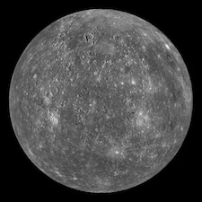
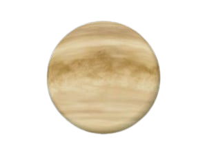
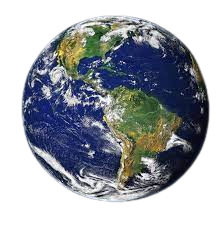
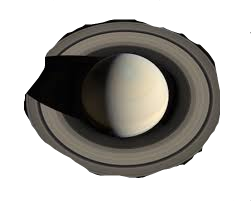
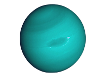
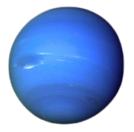

Mercurio es el planeta del sistema solar más cercano al Sol y el más pequeño. Forma parte de los denominados planetas interiores y carece de satélites naturales al igual que Venus. Se conocía muy poco sobre su superficie hasta que fue enviada la sonda planetaria Mariner 10 y se hicieron observaciones con radar y radiotelescopios. Posteriormente fue estudiado por la sonda MESSENGER de la NASA y actualmente la astronave de la Agencia Europea del Espacio (ESA) denominada BepiColombo, lanzada en octubre de 2018, se halla en vuelo rumbo a Mercurio a donde llegará en 2025 y se espera que aporte nuevos conocimientos sobre el origen y composición del planeta, así como de su geología y campo magnético
Venus es el segundo planeta del sistema solar en orden de proximidad al Sol y el tercero en cuanto a tamaño en orden ascendente después de Mercurio y Marte. Al igual que Mercurio, carece de satélites naturales. Recibe su nombre en honor a Venus, la diosa romana del amor (en la Antigua Grecia, Afrodita). Al ser el segundo objeto natural más brillante después de la Luna, puede ser visto en un cielo nocturno despejado a simple vista. Se trata de un planeta interior de tipo rocoso y terrestre, llamado con frecuencia el planeta hermano de la Tierra, ya que ambos son similares en cuanto a tamaño, masa y composición, aunque totalmente diferentes en cuestiones térmicas y atmosféricas (la temperatura media de Venus es de 463,85 °C). Su órbita es una elipse con una excentricidad de menos del 1 %, formando la órbita más circular de todos los planetas; apenas supera la de Neptuno. Su presión atmosférica es 90 veces superior a la terrestre; es, por lo tanto, la mayor presión atmosférica de todos los planetas rocosos del sistema solar. Es de color blanco/amarillento por su atmósfera compuesta mayoritariamente por dióxido de carbono (CO2), ácido sulfhídrico (H2S) y nitrógeno (N2)
La Tierra se formó hace aproximadamente 4550 millones de años y la vida surgió unos mil millones de años después.18 Es el hogar de millones de especies, incluidos los seres humanos y actualmente el único cuerpo astronómico donde se conoce la existencia de vida.19 La atmósfera y otras condiciones abióticas han sido alteradas significativamente por la biosfera del planeta, favoreciendo la proliferación de organismos aerobios, así como la formación de una capa de ozono que junto con el campo magnético terrestre bloquean la radiación solar dañina, permitiendo así la vida en la Tierra.20 Las propiedades físicas de la Tierra, la historia geológica y su órbita han permitido que la vida siga existiendo. Se estima que el planeta seguirá siendo capaz de sustentar vida durante otros 500 millones de años,21 ya que según las previsiones actuales, pasado ese tiempo la creciente luminosidad del Sol terminará causando la extinción de la biosfera
Marte es el cuarto planeta en orden de distancia al Sol y el segundo más pequeño del sistema solar, después de Mercurio. Recibió su nombre en homenaje al dios de la guerra de la mitología romana (Ares en la mitología griega), y también es conocido como «el planeta rojo»34 debido a la apariencia rojiza5 que le confiere el óxido de hierro predominante en su superficie. Marte es el planeta interior más alejado del Sol. Es un planeta telúrico con una atmósfera delgada de dióxido de carbono, y tiene dos satélites pequeños y de forma irregular, Fobos y Deimos (hijos del dios griego), que podrían ser asteroides capturados67 similares al asteroide troyano (5261) Eureka. Sus características superficiales recuerdan tanto a los cráteres de la Luna como a los valles, desiertos y casquetes polares de la Tierra.

Júpiter es el planeta más grande del sistema solar y el quinto en orden de lejanía al Sol.3 Es un gigante gaseoso que forma parte de los denominados planetas exteriores. Recibe su nombre del dios romano Júpiter (Zeus en la mitología griega). Es uno de los objetos naturales más brillantes en un cielo nocturno despejado, superado solo por la Luna, Venus y algunas veces Marte.4

Saturno es el sexto planeta del sistema solar contando desde el Sol, el segundo en tamaño y masa después de Júpiter y el único con un sistema de anillos visible desde la Tierra. Su nombre proviene del dios romano Saturno. Forma parte de los denominados planetas exteriores o gaseosos. El aspecto más característico de Saturno son sus brillantes y grandes anillos. Antes de la invención del telescopio, Saturno era el más lejano de los planetas conocidos y, a simple vista, no parecía luminoso ni interesante. El primero en observar los anillos fue Galileo en 1610,1 pero la baja inclinación de los anillos y la baja resolución de su telescopio le hicieron pensar en un principio que se trataba de grandes lunas. Christiaan Huygens, con mejores medios de observación, pudo en 1659 observar con claridad los anillos. James Clerk Maxwell, en 1859, demostró matemáticamente que los anillos no podían ser un único objeto sólido sino que debían ser la agrupación de millones de partículas de menor tamaño.2 Las partículas que componen los anillos de Saturno giran a una velocidad de 48 000 km/h, 15 veces más rápido que una bala.
Urano es el séptimo planeta del sistema solar, el tercero de mayor tamaño, y el cuarto más masivo. Se llama así en honor de la divinidad griega del cielo Urano (del griego antiguo Οὐρανός), el padre de Crono (Saturno) y el abuelo de Zeus (Júpiter). Aunque es detectable a simple vista en el cielo nocturno, no fue catalogado como planeta por los astrónomos de la antigüedad debido a su escasa luminosidad y a la lentitud de su órbita.13 William Herschel anunció su descubrimiento el 13 de marzo de 1781, ampliando las fronteras entonces conocidas del sistema solar, por primera vez en la historia moderna. Urano es también el primer planeta descubierto por medio de un telescopio.
Neptuno es el octavo planeta en distancia respecto al Sol y el más lejano del sistema solar. Forma parte de los denominados planetas exteriores, y dentro de estos, es uno de los gigantes helados, y es el primero que fue descubierto gracias a predicciones matemáticas. Su nombre fue puesto en honor al dios romano del mar —Neptuno—, y es el cuarto planeta en diámetro y el tercero más grande en masa. Su masa es diecisiete veces la de la Tierra y ligeramente mayor que la de su planeta «gemelo» Urano, que tiene quince masas terrestres y no es tan denso. En promedio, Neptuno orbita el Sol a una distancia de 30,1 ua. Su símbolo astronómico es ♆, una versión estilizada del tridente del dios Neptuno.
